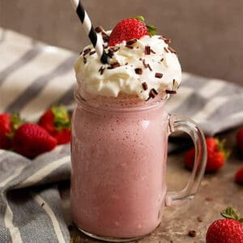

Strawberry Milkshake

Homepage
This is the perfect milkshake to sit at the balcony in hot summer days with. It's refreshing and yummy!
Ingredients
- 1/2 cup whole milk
- 1/2 cup heavy cream
- 10 scoops(or 2 cups) Strawberry ice cream of your choice
- Toppings of your choice, for example, whipped cream and fresh cut strawberries
Steps
- Let your ice cream temper for about 5-10 minutes at room temperature. Chill your milkshake glass in the freezer
- Combine the milk, heavy cream, and ice cream in the jar of a high speed blender.
- Blend on low and work your way up to medium, until your desired milkshake consistency. Dont forget to scrape down the sides once or twice to get everything incorperated.
- Taste it, add more milk if you want it thinner, add more ice cream if you want it thicker.
- Pour the milkshake in the chilled glass and decorate with your favorite toppings!
- Enjoy!